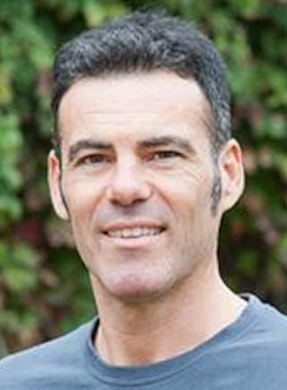
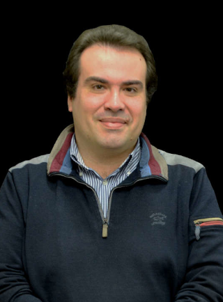

Meet The Team

Becca Wilson holds an interdisciplinary research career spanning the space, atmospheric and health sciences and has contributed to the DataSHIELD project for the past seven years. As Paul Burton retires from his role of PI and lead of the project, Becca is now leading the team. She is currently a research fellow at University of Liverpool developing software for the sharing, access and immersive data visualisation of sensitive health data and is also a project specialist in the NIHR Advanced Research Collaboration North West Coast developing novel data processes fundamental to health inequalities research. She is an advocate for open-source software and open research practices through her fellowship with the UK Software Sustainability Institute and membership of the R Forwards Task Force in the R Software Foundation.
Paul Burton is Professor of Data Science for Health at Newcastle University and is retiring from the University in September 2022. He was Principal Investigator and lead of the DataSHIELD project and jointly lead the statistical functionality team. Centrally involved in incorporating generalized linear modelling (glm) and generalized linear mixed modelling (glmer) into DataSHIELD, with multi-study inference based either on full joint likelihood applied to Individual Patient Data (IPD) or through centrally controlled study-level meta-analysis. He will continue to work on the project into retirement and retain Emeritus status.
Paul BurtonFormerly Principal Investigator and lead of DataSHIELD project.paul.burton@newcastle.ac.uk
A core developer of DataSHIELD statistical functionality and provider of support to DataSHIELD users. Developer of statistical methodologies for secure multi-party computations and privacy-preserving data visualisations. Focusing on statistical approaches, including data synthesis and anonymization techniques, aiming the mitigation of disclosure risk associated with sensitive data without degrading the scientific value of the data.
Demetris AvraamFunction developer & statistics expert
Stuart Wheater is a senior member of the DataSHIELD team, involved in all aspects of the development and maintenance of the DataSHIELD system, with expertise in managing the release, continuous integration and quality assurance processes.
Stuart WheaterRelease, Continuous Integration and Quality Assurance Manager
Hugh Garner works on devops for DataSHIELD, including developing a load testing framework, containerization methods and data management. His research interests focus on data visualisation methodology, particularly explorative methods for high-dimensional hierarchical datasets and timeseries.
Hugh GarnerDevops
Research Assistant in Statistics on the DataSHIELD project. Major contributor to online presence: keeping the website up to date; maintaining the accuracy of wiki articles; and following current developments. Demonstrator for beginners’ workshop. Developer and tester of new statistical analysis functions for use within DataSHIELD.
Alex WesterbergResearch Assistant, website and wiki maintainer
Communications and Platform Coordinator for the DataSHIELD project and PA to Becca Wilson at Liverpool University. Contributor to the project's online presence: updating the website and social media. Admin assistant to the DataSHIELD Advisory Board. Diary management for both Becca Wilson and Paul Burton.
Elaine SmithCommunications and Platform Coordinator
Coordinator of ”Use Case 2” in the MIRACUM project, which aims at jointly analysing data of several German university hospitals, with DataSHIELD as main infrastructure, with a research focus on deep learning and more generally machine learning techniques in DataSHIELD.

Senior Data Scientist and technical work package lead on the EUCAN-Connect project.
Aetiology and Mechanisms of Diabetes and Related Metabolic Disorders of Later Life
Tom BishopSenior Data Scientist MRC Epidemiology, University of CambridgeTom.Bishop@mrc-epid.cam.ac.uk

Population health data researcher working to join up datasets and gain insight from complex systems; part of the NIHR Applied Research Collaboration (Northwest Coast).
Previously worked for Newcastle University on a variety of health data projects, including: DataSHIELD, the 1958 Birth Cohort Genetics Repository and Connected Health Cities NENC.
Olly ButtersSenior Data Scientist at the University of Liverpool
I analyze complex problems and implement new statistical and machine learning techniques for deriving insights from large amounts of data.
My research is in the field of modelling of biological systems. I apply mathematical modelling to understand biological systems. I also apply machine learning to the field of healthcare.
Soumya BanerjeeDevops
Developmental Psychopathology Researcher, ie understanding what causes mental health problems such as anxiety and depression to develop over childhood.
Collaborating on the H2020 LifeCycle project (https://lifecycle-project.eu/). Focusing on understanding how social deprivation and exposure to urban environmental stressors (such as noise and air pollution) affects parental and child mental health.
Statistical methodology; function developer
Rui CamachoRECAP-Preterm, INESC TEC
Data harmonization expert and principal investigator of Maelstrom Research. Developing methods and tools to improve rigour and cost efficiency of the data harmonisation process. Generation of scientifically founded harmonized datasets is essential to optimise the DataSHIELD users’ experience.
Isabel FortierResearch Institute of the McGill University Health Centre (RI-MUHC), Montreal
Researcher at INESC TEC working for RECAP Preterm and EUCAN-Connect. Developing and maintaining the CORAL distribution that leverages on software containers to reduce the effort needed to get the Obiba and DataSHIELD infrastructure up and running both for development and production.
Gonçalo Campos GonçalvesINESC TEC, Porto
Research Associate with specialising in: machine learning for patient-specific predictions; cross-hospital data analysis systems and infrastructures; data integration and standardised vocabulary
Julian GründnerResearch Associate at Institute for Medical Informatics, Biometry and Epidemiology, University of Erlangen-Nuremberg
Sido HaakmaResearch Associate at University of Groningen
Adviser on the ethical and legal aspects of DataSHIELD, covering applicable data privacy and ethical standards across global jurisdictions.
A member of the Canadian Commission for UNESCO (CCU) Sectoral Commission for Natural, Social and Human Sciences. Current Chair of the Bioethics Workgroup of the International Human Epigenome Consortium (IHEC) and Co-Lead the regulatory and ethics work stream of the Global Alliance for Genomics and Health (GA4GH). Previously Chair (2017-2019) of the Ethics and Governance Committee of the International Cancer Genome Consortium (ICGC). Member of the Human Genome Organization (HUGO) Committee on Ethics, Law and Society (CELS).
Yann JolyResearch Director of the Centre of Genomics and Policy (CGP). Associate Professor at the Faculty of Medicine, Department of Human Genetics cross-appointed at the Bioethics Unit, at McGill University
Inferring causality from observational epidemiological data, federated analysis of data when data cannot be pooled, statistics education.
Elinor graduated in Mathematics and Statistics from the University of Warwick before completing a PhD in Probability Theory at the University of Manchester. Her thesis examined the large deviations of random walks and Lévy processes. Prior to joining UCL, Elinor worked as a Research Associate in Genetic Epidemiology at the University of Leicester and as a Statistician at the Univeristy of Reading.
**** edit this
Previously Chair of the Ethics and Governance Committee of the International Cancer Genome Consortium (2009-2017). Currently Chair of the Ethics Advisory Panel of WADA (2015- ), and was the Co-Chair of the Regulatory and Ethics Workstream of the Global Alliance for Genomics and Health (2013-2019).
Bartha M KnoppersProfessor, Canada Research Chair in Law and Medicine and Director of the Centre of Genomics and Policy of the Faculty of Medicine at McGill University
Researcher and software developer working on implementing deep learning methods in DataSHIELD, integrating functionality from the Julia programming language. Also involved in the development and setup of the DataSHIELD infrastructure for the GESA and MIRACUM project.
Stefan LenzResearch Associate at Institute of Medical Biometry and Statistics (IMBI) Freiburg, Germanylenz@imbi.uni-freiburg.de

Leader of the OBiBa project and owner of the Epigeny consulting company. In charge of the design and implementation of the DataSHIELD middleware: the DataSHIELD R and Java APIs, and the Opal data warehouse. Maintainer of various R packages (DSI, DSOpal, DSLite, resourcer, opalr) available in the official R packages repository. Committed to finding innovative solutions for big and complex data handling in DataSHIELD.
Yannick MarconOBIBA Project lead, head of Epigeny Consulting Co.
Andrei Morgan is a paediatrician / neonatologist, an epidemiogist, and a free software and open science advocate. He trained in the UK but since 2017 has been based in Paris, France, where he works as a researcher at INSERM (Institut National de la Santé et de la Recherche Médicale - the French National Institute for Health and Medical Research), and also does some work as a doctor. His main interest is focused on understanding differences between countries in the organisation of health care and their consequent impact on long-term population health. In his spare time, he enjoys being with friends, good conversation, cooking, reading, cycling and fire juggling.
Andrei MorganPaediatrician/Neonatologist, Epidemiologist
She leads a team of social and data scientists conducting social studies of sociotechnical and normative practices in health research data sharing and governance, particularly interventionist, collaborative ethnographic studies with and of the progress, emergent values, outcomes and social effects of health and genomic data science. Alongside this work, the she develops new forms of governance for responsible and responsive data sharing in health services, biobanks and cohort studies which centrally involve citizens and research participants in ethical and governance decision-making. Madeleine established and chairs the METADAC data and samples access governance infrastructure (www.metadac.ac.uk) for nine UK longitudinal studies.
Madeleine MurtaghProfessor of Sociology and Bioethics, University of Glasgow
Researcher at INESC TEC working for RECAP Preterm and EUCAN-Connect. Developing and maintaining the CORAL distribution that leverages on software containers to reduce the effort needed to get the Obiba and DataSHIELD infrastructure up and running both for development and production.
José Pedro OrnelasResearcher at Center for Information Systems and Computer Graphics, INESC TEC, Porto

Angela is an epidemiologist at the University of Copenhagen, where her research focuses on how early-life exposures influence the gut microbiome, the development of the immune response and the risk of asthma and allergy. Since 2017, she has been actively involved in the Horizon2020 LifeCycle Project, a collaboration that is bringing together data from multiple birth cohorts across Europe and Australia to establish a FAIR (findable, accessible, interoperable and reusable) data resource known as the EU Child Cohort Network. In this project she has helped to develop protocols for data harmonisation and establish the infrastructure for the federated analysis of data using DataSHIELD. Angela is now using DataSHIELD to conduct her own research into how early-life exposure to pets influences the risk of allergic sensitization, asthma and impaired lung function in childhood.
Angela Pinot de MoiraPostdoc in Epidemiology at University of Copenhagen

Juan R Gonzalez is an Associate Research Professor at ISGlobal where he leads the Bioinformatic Group in Genetic Epidemiology (BRGE). He has co-authored more than 160 scientific papers published in peer-reviewed journals and has extensive experience in large international research projects. As an Adjunct Professor at the Department of Mathematics at Autonomous University of Barcelona, his educational activities focus on providing graduate lectures on advanced statistical methods and post-graduate lectures in biostatistics and in omic data analyses based on his book “Omic association studies with R and Bioconductor”. His work focuses on the development of statistical and computational methods for the analysis and comprehension of different omic data motivated by a wide range of questions of biological and clinical relevance. These include genomic (CNVs, inversions, mosaicisms, loss of chromosome Y), transcriptomic (RNA-seq and alternative splicing) and proteomic among others. The analysis of the exposome, its characterization and how to integrate it with different omic layers is also another active line of research of his group as part of an FP7 European project called HELIX whose aims are going to be further investigated in the H2020 project called ATHLETE to which Juan R Gonzalez is a WP leader. His group is also very active in developing tools to perform non-disclosive data analyses using DataSHIELD (https://github.com/isglobal-brge).

Artur has been a senior researcher at INESC TEC, Portugal since 1998. He is assistant coordinator of the Centre for Information Systems and Computer Graphics (CSIG). Current research interests include platforms and methods for collaborative research, privacy-preserving distributed computation, the semantic sensor Web (IoT) and Big Data processing. From October 1996 to December 1997, he was an associate member of CERN - European Laboratory for High Energy Physics, IT Division/Web Office. His research is applied in two major areas: Personalized Health Research (PHR) and Earth and Ocean Observation Science (EOOS). The PHR area currently subdivides into: a) personalised Internet-based treatments; and b) human data storage, privacy-preserving processing and controlled FAIR data sharing. In this area, he participates in several European projects, including ICT4Depression (FP7), E-COMPARED (FP7), STOP Depression (EEA Grant), iCare4Depression (FCT), RECAP Preterm (H2020), EUCAN-Connect (H2020) and iReceptor Plus (H2020). In these projects, he often undertakes the responsibility for the system’s architecture, platform implementation, or technical coordination.
Artur RochaSenior researcher at INESC TEC and Assistant Coordinator of the Centre for Information Systems and Computer Graphics (CSIG)
Working on the RECAP Program
Paula Raissa SilvaResearch Assistant at INESC TEC
Academic Tutor at the Open University. Particular expertise in distributed software architecture, algorithms and computation, scalable machine learning and bio-inspired methodologies. Engaged with user interaction design team and developed innovative features required for non-parametric statistics and scalable machine learning in non-disclosive federated analysis. Helped to develop DataSHIELD’s conceptual and testing frameworks.
Patricia Ryser-WelchResearch Associate in Data Science
Morris develops innovative and powerful methods for efficient modeling, production and evolution of flexible biological software infrastructures for post-genomic research. These methods allow researchers to manage, analyze and integrate large datasets at multiple molecular levels to answer various research questions. These methods and tools are now evolving into ‘eLaboratories’ and ‘eScience’: integrated systems of tools that speed up biomedical research by integrating large-scale genotyping and phenotyping experiments such as microarrays, proteomics, metabolomics, SNP genotyping, and deep sequencing. His work is disseminated through local (GroningenBioinformatics Center, LifeLines), national (Netherlands Bioinformatics Center/BioAssist program) and international (EU-GEN2PHEN, EU-CASIMIR, European Bioinformatics Institute) consortia, who are adopting the MOLGENIS open source framework to handle the enormous flow of post-genomic data.
Morris SwertzHead of Genomics Coordination Center, Groningen, Professor of of BioInformatics - ‘Biomedical BiG Data Science’m.a.swertz@rug.nl
Statistician developing statistical methodology in the context of DataSHIELD with a focus on variable selection, machine learning, and local prediction models. Additionally supports clinical researchers in using DataSHIELD in the context of the GESA and the MIRACUM project.
Research Assistant in Biostatistics on the DataSHIELD project with knowledge in omics field. Collaborator in LITMUS project developing infrastructure and functions for sharing and analysing data safely. Contributor to implement functions for omics data analysis and responsible for function documentation and testing.
Leire Abarrategui MartinezPhD Student conducting Omics research.
The DataSHIELD project would not have matured and developed in its current form without the contributions of the following individuals:
Hasan A.J.K.Al Radhi | Newcastle University | Dr Chris Newby | University of Leicester |
Isabelle Budin | Norwegian Institute of Public Health | Dr Neil Parley | University of Bristol |
Yutong (Sam) Cai | Imperial College London | Dr Anne Marie Tasse | McGill University |
Professor Vincent Feretti | Ontario Institute of Cancer Research | Dr Jonathan Tedds | University of Leicester |
Dr Amadou Gaye | University of Leicester, University of Bristol | Professor John Thompson | University of Leicester |
Jennifer Harris | Norwegian Institute of Public Health | Dr Andrew Turner | University of Leicester, University of Bristol |
Dr Susan Hodgson | Imperial College London | Professor Edwin van den Heuvel | Eindhoven University of Technology |
Dr Julia Isaeva (Kutschke) | Norwegian Institute of Public Health | Dr Susan Wallace | University of Leicester |
Dr Joel Minion | University of Newcastle | Dr Wilma Zijlema | University of Groningen |